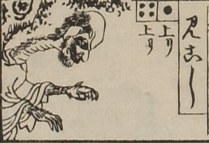

見越し入道；ミコシニュウドウ，男；オトコ

見越し。頭部が大きく、口と顎にひげがと生えている。目玉と鼻が大きい。首は長く、蛇腹のようなしわが寄っており、後頭部からうなじに毛が生えている。毛が生えた獣のような腕を前方に差し出している。
出典：親書誌：U426_nichibunken_0082：新版妖怪飛巡雙六；シンパンヨウカイトビマハリスゴロク／日付：2007／資源識別子：U426_nichibunken_0082_0027_0000
Copyright (c)2010- International Research Center for Japanese Studies, Kyoto, Japan. All rights reserved.